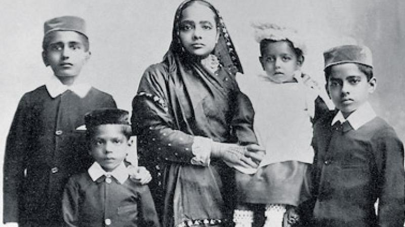

“Happiness is when what you think, what you say, and what you do are in harmony.”
|
|
“Happiness is when what you think, what you say, and what you do are in harmony.” |
|
Marriage Life of mahatma Gandhi |
|
|

Mohandas was not even fourteen when his parents married him to a girl from Porbandar, named Kasturbai.
For the time being, Mohandas was very happy, for he knew that he would get nice new clothes to wear and a
new companion to play with. But when he grew up, he always condemned child-marriage and fought against this evil practice.
Soon after his marriage Mohandas started ill-treating his, gentle, little wife. He would check her movements and even choose her friends for her. Kasturbai was weary of these little tyrannies, and the more Mohandas tried to control her, the more she resisted them. Very often they quarreled and would not talk to each other."
"But why did Mohandas behave in this manner, mother?"
"Well, perhaps he thought that these quarrels and differences were necessary in love.
Although married, Mohandas did not stop going to school. In fact, he was considered to be one of the brightest boys in the class
when he reached the upper standards. He always wished that everyone should think of him as an honest and truthful boy. And if ever,
by mistake, someone thought that he was telling a lie, he felt hurt and cried for hours. He was also keen on bringing to the path of
virtue those of his companions who were given to bad ways; and that was why he made friends with a boy who was very much older than he
and very wicked. His wife as well as well as his parents tried their best to stop this friendship, but Mohandas paid no heed to their words.
By the way, Hari, there was one thing about Mohandas which I forgot to tell you. He was a very very timid boy, and would not enter a dark room.
His friend knew this and he also knew that Mohandas was anxious that he should become strong and brave. So one day, he said to him, 'Look, Mohan,
there is only one way of becoming strong and that is by eating meat. See how strong and well-built the English are. Just because they eat meat they
are able to rule over us Indians, who are so weak and sickly.' Mohandas, in his innocence, believed this and he agreed to start taking meat.
You know, Hari, it is forbidden by religion to eat meat. So meat was never bought or cooked in Mohandas's house. How could he then eat meat ? His
friend invited Mohandas to dinner at his place.Gandhi and Kasturba Then, he said, he would be able to take meat without his parents knowing any thing
about it.
|
Home / Privacy Policy / Terms of Service / Feedback
By Bhoopendra Yadav
CBSE©/ All Rights Reserved